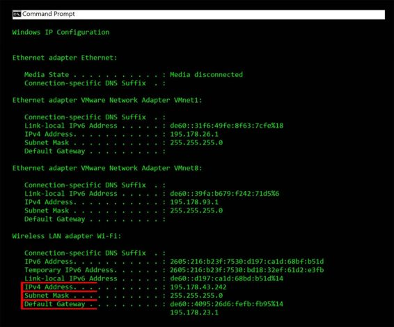

Terminology
IP Address : An IP address, short for Internet Protocol address, is an identifying number for a piece of network hardware. Having an IP address allows a device to communicate with other devices over an IP-based network like the internet.
Subnet mask: A subnet mask is a 32-bit number used to differentiate the network component of an IP address by dividing the IP address into a network address and host address.Subnet masks are used to design subnetworks, or subnets, that connect local networks and determine what subnet an IP address belongs to.
Default Gateway: A default gateway serves as an access point or IP router that a networked computer uses to send information to a computer in another network or the Internet.Default simply means that this gateway is used by default, unless an application specifies another gateway.A default gateway allows computers on a network to communicate with computers on another network. Without it, the network is isolated from the outside.
Using system command
To get the IP Address, Subnet Mask and Default Gateway, we execute ipconfig command in the cmd.Here, we will make use of system() from < stdlib.h > to perform a system operation with the help of a C program:
#include <stdio.h>
#include <stdlib.h>
int main()
{
system("c:\\windows\\system32\\ipconfig");
return 0;
}
Using execl command
This displays the IPv4 address, Subnet Mask and the Default Gateway.The same operation can also be performed with the execl() function.To execute the later, we code:
#include <stdio.h>
#include <stdlib.h>
#include <unistd.h>
int main()
{
execl("c:\\windows\\system32\\ipconfig", "ipconfig", 0);
return 0;
}
Output:
